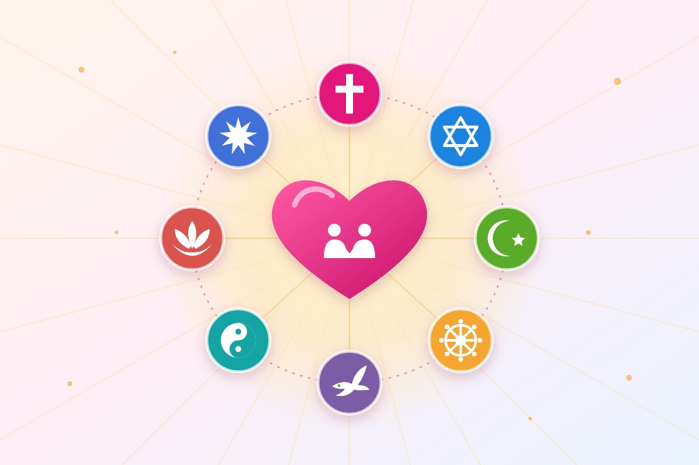

Espiritualidade
Quaresma, conversão do coração e jejum das palavras
Por Equipe Instituto AMA · Publicado em
Para a Quaresma de 2026, o Papa Leão XIV enfatiza a “escuta e jejum” como caminho de conversão, com foco especial no jejum de palavras ofensivas e no cultivo de palavras de esperança.
As recomendações centram-se na renovação interior, oração intensa e caridade prática, desarmando a linguagem para promover a fraternidade e a paz.
O que é a Quaresma?
A Quaresma é o tempo de preparação para a Páscoa vivido pelos cristãos. São cerca de 40 dias, que lembram os 40 dias de Jesus no deserto, em oração e jejum. Ela começa na Quarta-feira de Cinzas e vai até a Quinta-feira Santa, quando começa o Tríduo Pascal. Em 2026, a Quarta-feira de Cinzas foi em 18 de fevereiro e a Páscoa, em 5 de abril.
Tradicionalmente, a Quaresma se apoia em três práticas: a oração (aproximar-se de Deus), o jejum (renunciar a algo para se libertar do que nos prende) e a esmola, ou caridade (partilhar com quem precisa).
Como praticar o jejum das palavras no dia a dia
O jejum das palavras proposto pelo Papa vale para qualquer pessoa, de qualquer crença, que queira conviver melhor. Algumas ideias práticas:
- Pense antes de falar: pergunte-se se o que vai dizer é verdadeiro, se é necessário e se é gentil.
- Evite a fofoca: quando a conversa virar crítica a alguém ausente, mude de assunto ou fale algo positivo sobre a pessoa.
- Cuidado nas redes sociais: não compartilhe ofensas, boatos ou comentários que humilham. Antes de responder no calor do momento, espere.
- Troque a reclamação pela gratidão: a cada queixa, procure lembrar de algo pelo que agradecer.
- Ouça mais: deixe o outro terminar de falar e procure entender antes de responder.
- Diga palavras que constroem: um elogio sincero, um "obrigado", um "me desculpe" e um "conte comigo" podem mudar o dia de alguém.
Palavras têm força. Cuidar delas é uma forma concreta de caridade, dentro de casa, no trabalho e na comunidade.
Principais recomendações
- Jejum de palavras que ferem: o principal pedido é abster-se de calúnias, julgamentos temerários e críticas que machucam o próximo, substituindo-as por palavras de gentileza e esperança.
- Escuta atenta: criar espaço para ouvir a Deus (através da Palavra) e ao próximo, superando o egoísmo e o isolamento.
- Conversão do coração: mais do que penitências exteriores, busca-se uma mudança interior sincera para colocar Deus no centro da vida.
- Oração e Eucaristia: intensificar a oração, especialmente através dos sacramentos da Confissão e da Eucaristia.
- Caridade e solidariedade: praticar obras de misericórdia, com atenção especial aos pobres, vulneráveis e aos que sofrem, vivendo a fraternidade.
A mensagem reforça que a Quaresma não é um tempo de luto, mas um “itinerário” de renovação rumo à Páscoa, convidando os fiéis a sair da zona de conforto e superar a indiferença.
Perguntas frequentes
Quanto tempo dura a Quaresma?
Cerca de 40 dias. Ela começa na Quarta-feira de Cinzas e vai até a Quinta-feira Santa, antes do Tríduo Pascal que leva à Páscoa.
O que é o jejum das palavras?
É a proposta de, durante a Quaresma, abster-se de palavras que ferem, como críticas, julgamentos, fofocas e ofensas, e substituí-las por palavras de gentileza, esperança e paz.
Quem não é católico pode praticar o jejum das palavras?
Sim. Cuidar do que se fala é uma prática de respeito e de convivência que faz bem a qualquer pessoa, em qualquer época do ano.
Referências
- Vatican News: Papa: Quaresma, conversão do coração e jejum das palavras
- Mensagem do Papa Leão XIV para a Quaresma de 2026 (texto oficial)
Leia também
Advento: o que é, coroa, velas e como viver as semanas antes do Natal
O significado do Advento e da coroa com quatro velas, as datas de 2026 e ideias para viver esse tempo de preparação em família.
Ler matériaEvangelho no Lar: o que é, como fazer e com que frequência
A importância de orar e estudar o Evangelho em família, o passo a passo, a periodicidade e como outras religiões cultivam a fé no lar.
Ler matéria
Todas as religiões levam ao bem: amor, caridade e evolução
Muitos caminhos, um mesmo princípio: amar o próximo, praticar a caridade e evoluir a cada dia.
Ler matériaGostou desta matéria? Veja outras no blog, conheça nossas referências ou fale com a gente.